#To access the values, write the object name and use square brackets to access either row or column values e.g. data[row,column]
UKDemographic[1,] #Access the 1st row values
UKDemographic[,1] #Access the 1st column values
UKDemographic$Age #By using a $, we can access column values by the name of the column
UKDemographic[2,3] #Access a specific value from the table4 - Tutorial 1
Step 1 - Load the UK Demographic Data into R
To import a dataset, you can click File > Import Dataset > From Text (base)…
Navigate to the MMI_Lab_1 folder that you previously created in Understanding R, and click on UK_Demographic.csv
A window will open up, from there it gives a number of options for importing your dataset.
We will change the Heading to Yes - this means that we treat the first row of data as the headers, or the column names.
We will also change the na.strings from NA to blank - this removes any missing data from the dataset.
Lastly, tick the box for Strings as factors - this will convert any text values in the data to factors. These are just categorical data that can take fixed values - imagine we had smoking information in our dataset, a factor for this smoking column could be “Yes” or “No” and if we use it as a factor then it works better for plotting.
Your dataset should look like the Data Frame highlighted in blue. You can now click Import.
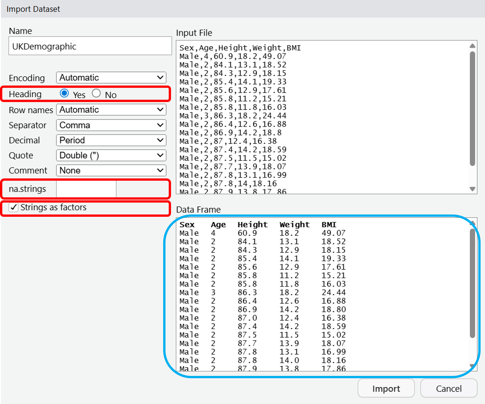
Step 2 - Looking at the data
You’ll notice that once we’ve imported the data, it is loaded into the Environment pane, so we can access the data any time we like.
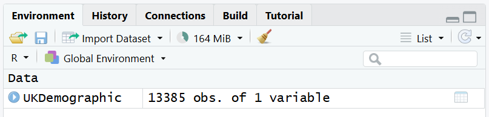
To check the contents of this Data Frame, you can click the name of the object in the Environment pane.
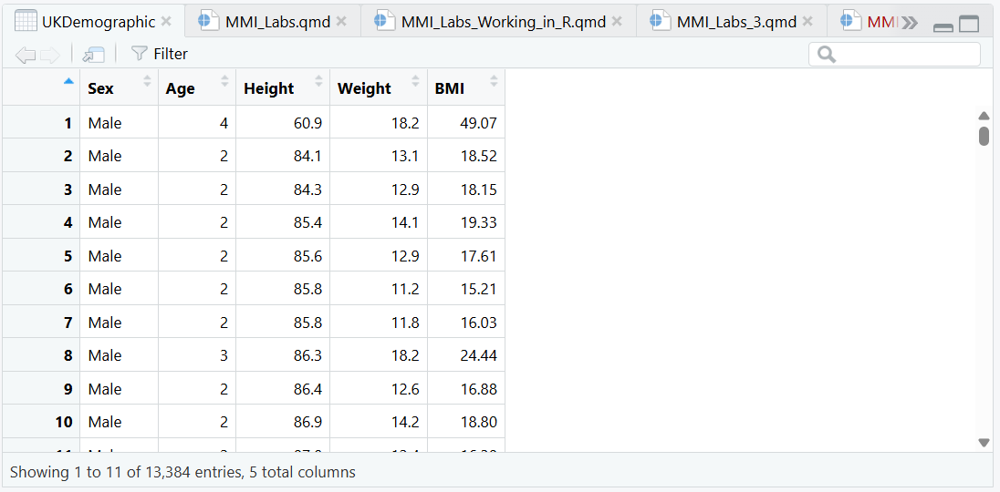
The UK Demographic data set comprises a large collection of data from the UK population. Have a look through it to understand what sort of data it contains.
If you wanted to access particular values, you can access it in the code using the index corresponding to either row or column values:
Step 3 - Determining the mean, median, minimum, and maximum value of a column
Once you’re familiar with the dataset, let’s run some functions:
#Note that to autocomplete code, you can either click the full name when it appears in a dropdown menu, or hit the TAB key on your keyboard to autocomplete.
mean(UKDemographic$Height)
median(UKDemographic$Height)
min(UKDemographic$Height)
max(UKDemographic$Height)What are the results of each of these functions on Height?
| Mean | Median | Max | Min | |
|---|---|---|---|---|
| Height |
Copy the output of each function exactly.
You can also use the summary function to investigate a variable.
summary(UKDemographic$Weight) Min. 1st Qu. Median Mean 3rd Qu. Max.
10.90 57.67 70.00 68.71 82.90 130.00 Note that so far we’ve only investigated continuous data, but we can also investigate categorical data.
summary(UKDemographic$Sex)There are Females in the dataset, and Males in the dataset.
You should be able to read the values from the summary() function.
If exact values are not returned, it’s likely that you are either using the wrong column, or you did not import the data correctly.
Step 4 - Plotting data in R
To visualise the data, we’ll use functions.
Draw a boxplot of the variation in Height using the boxplot command:
boxplot(UKDemographic$Height)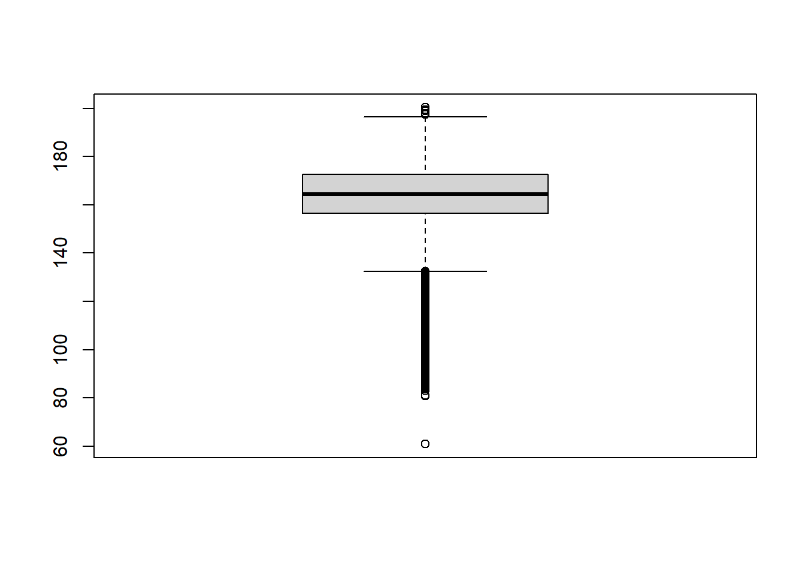
You can also present the same information using a histogram, using the histogram function:
hist(UKDemographic$Height)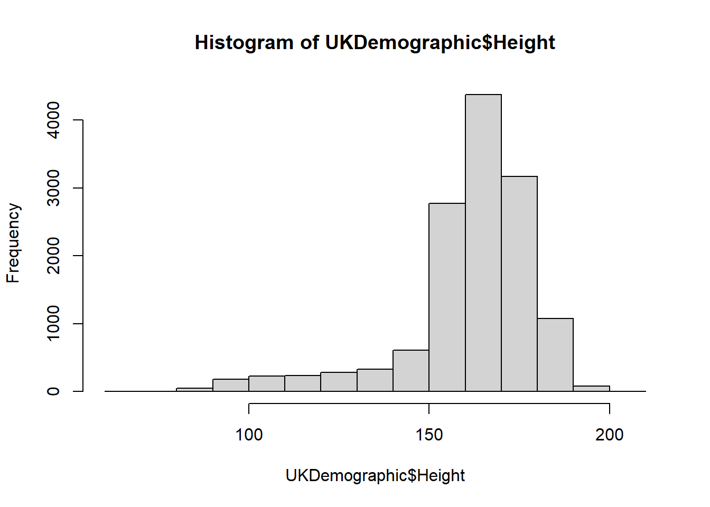
As explained in “3. Coding in R”, we can add arguments to the function.
Try modifying the histogram with these:
hist(UKDemographic$Height, breaks = 50)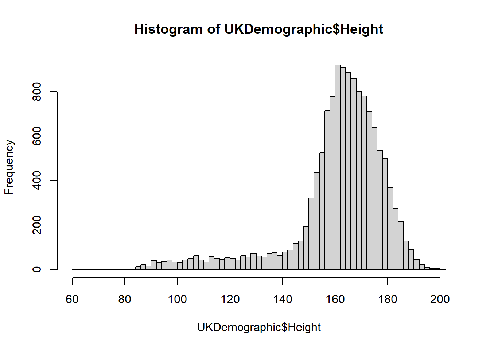
hist(UKDemographic$Height, breaks = 5)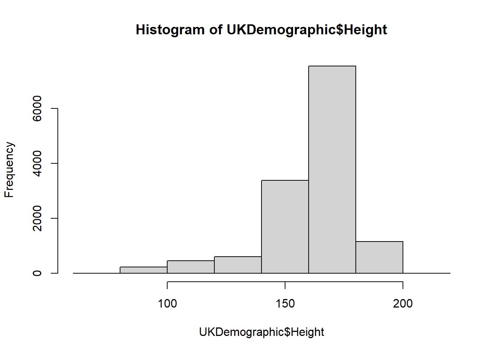
What aspect of the histogram are we changing by adding breaks? Use ?hist to investigate further.
We provide a single value as the input to breaks, so we do not provide a vector, a function, or a character. In this case, the number of cells is changed.
Note
In this example, we change the number of cells for a histogram - what this means is that the data is grouped into buckets (e.g. 0-10, 10-20 … 100-110) and it counts how many data points fall into these groups.
You can play around with the breaks to see how this changes!
We can also investigate subsets of the data:
hist(UKDemographic$Height[UKDemographic$Height < 150])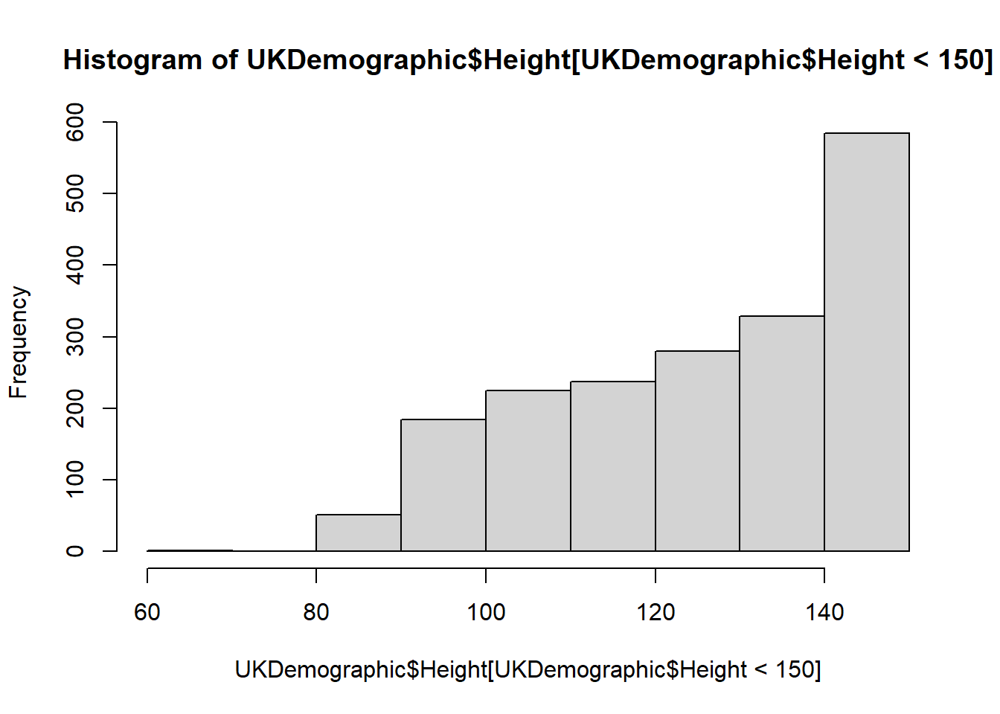
Or by defining the limits of the x-axis (xlim):
hist(UKDemographic$Height, xlim = c(0,150))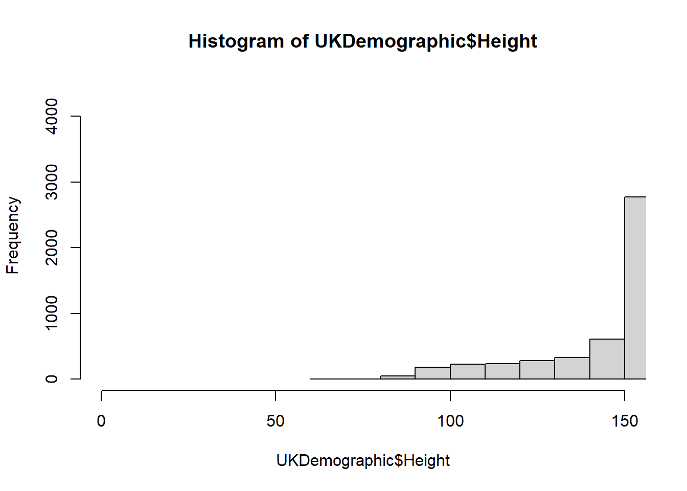
#Remember, the c function is to concatenate a vector, in this case the values of 0 - 150. You can run c(0,150) to confirm this.We can make the histogram look much better by altering the arguments utilised:
hist(UKDemographic$Height,
breaks = 50, #Set the number of cells used
xlab = "height (cm)", #X axis label
ylab = "number of people", #Y axis label
col = "red", #Changing the colour
main = "variation in height in the UK", #Making title name
xlim = c(80,200)) #Putting limits of the values shown on the x axis.
box()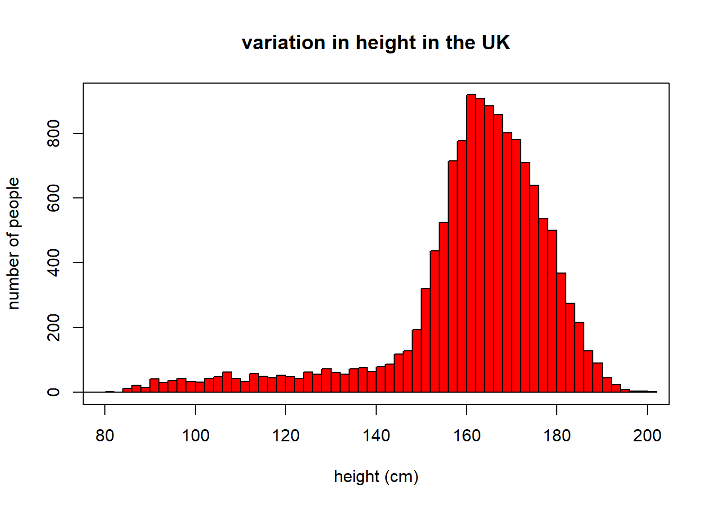
Note that we use indentation to make the code look pretty - it makes it easier for you to understand too! Try to adhere to these sort of formats.
If we want to represent categorical data, we can use bar charts using barplot().
barplot(summary(UKDemographic$Sex))
Note
The barplot command requires numbers to determine the height/length of each bar.
We used the summary command to determine the number of observations for each of our categories in the UKDemographic$Sex column.
We could also have used the table command:
barplot(table(UKDemographic$Sex))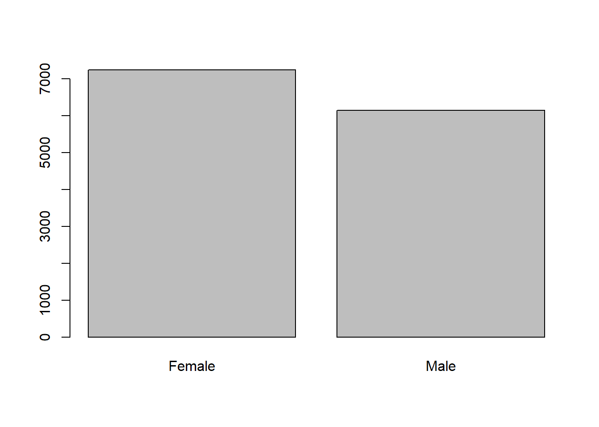
table converts categorical data into a table containing the categories of data (in this case sex) and the number of observations in these categories.
table(UKDemographic$Sex)
Female Male
7240 6144 A variation on this is prop.table that converts a table output to proportions, so we can get the relative proportion of females and males in the UKDemographic dataset.
#Notice that to get the proportion, we need to run this on the output of table(UKDemographic$Sex).
barplot(prop.table(table(UKDemographic$Sex)))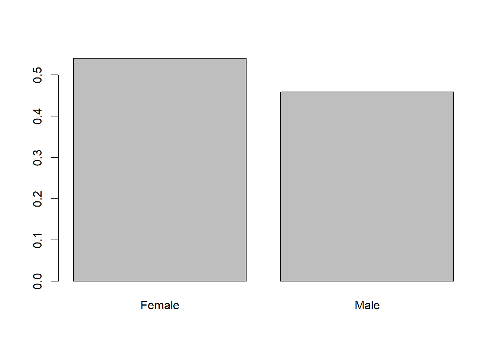
library("exams")
library("exams2forms")
ans1 = "whatever you want"What is the null hypothesis for the proportion of females and males in the UKDemographic dataset?
You should be able to read the values from the summary() function.
If exact values are not returned, it’s likely that you are either using the wrong column, or you did not import the data correctly.
Look back at Step 1 to ensure that you have included Strings as factors, and re-read this section to understand why we do this. Metainformation
What is the null hypothesis for the proportion of females and males in the UKDemographic dataset?
Solution
The central limit theorem states that…
Step 5 - Using the chi-squared test
Using the chi-squared test, we can determine whether the number of females and males deviates from expected under the null hypothesis.
Calculating the chi-squared test is easy to do - but we can use the chisq.test in R to do this even more easily:
chisq.test(table(UKDemographic$Sex))
Chi-squared test for given probabilities
data: table(UKDemographic$Sex)
X-squared = 89.75, df = 1, p-value < 2.2e-16
Note
Remember when performing a chi-squared analysis we must use the number of observations, not the relative proportions of observations in each category.
- What is the chi-squared value for the observed proportion of females and males in the UKDemographic dataset relative to that expected under the null hypothesis?
- How does the observed proportion of females and males in the UKDemographic dataset differ from that expected under the null hypothesis? Fill in the blanks:
There are females than expected under the null hypothesis in the UK Demographic dataset.
- What is the probability of observing this difference between female and male proportions, if the true population proportion was 50:50? NOTE: By default, it says in the summary that the p-value is < 2.2e-16, to access the actual p-value, use
chisq.test(table(UKDemographic$Sex))[["p.value"]].
- Should we be inclined to accept or reject the null-hypothesis? Fill in the blanks below:
As the p-value is 0.05, the chi-squared analysis suggests that it is extremely that we would have observed as big of a difference in the ratio of males and females as expected under the null hypothesis of equal numbers. Therefore, we should be inclined to the null hypothesis.
- What might explain the difference between the observed proportion of females and males in the UKDemographic dataset relative to that expected under the null hypothesis?
Let’s look at the output of the chi-sq test to see where the information is coming from.
chisq.test(table(UKDemographic$Sex))
Chi-squared test for given probabilities
data: table(UKDemographic$Sex)
X-squared = 89.75, df = 1, p-value < 2.2e-16For question 1, the chi-squared value is our X-squared statistic, so this values is just 89.7501494. What does this value actually mean? Let’s look at the chi-square table.
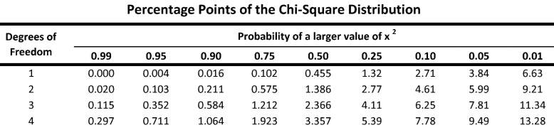
Our degrees of freedom is n-1, now because we only have two factors (male or female) this means it n = 2, so the degrees of freedom is 1.
If we look along the degrees of freedom at 1, we compare our chi-squared value with the values in here. Our value of 89.7501494 is much higher than the values on the table - so our probability of observing this value is well below 0.01 - so this is a very significant result.
Let’s imagine the chi-squared value was 1, then we would see on the table that this value would sit between a probability value of 0.50-0.25, which is not significant.
The exact value of the probability value is also given in the summary table for the chi-sq test we do in r, and this value is 2.7021791^{-21}.
From the barplots and the boxplots we have created, we can see that there are more females than males in the dataset.
So, based on these results we can reject the null hypothesis that the proportion of females and males in the sample is equal, and say that it is extremely unlikely that we would have observed as big of a difference in the ratio of males and females as expected under the null hypothesis of equal numbers.
For a reason why the observed proportion of females and males is different to that expected under the null hypothesis, all of the options are valid - whenever you have a statistical result, try to think of possible reason as to why the data may be reflecting this way.
You have completed Tutorial 1!
Hopefully this wasn’t so hard for you to follow, it’s more important that you understand the outputs and how the statistical tests work rather than all the code.
If you are interested in working further with R, there are loads of resources online like forums discussing troubleshooting (StackOverflow) or tutorials for new learners (W3Schools).